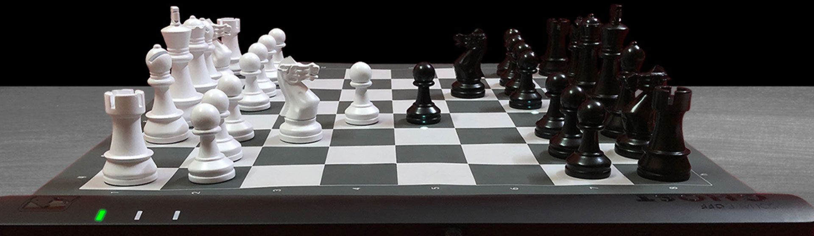

Introdução: O xadrez é um jogo de mesa de natureza recreativa e competitiva para dois jogadores, É praticado sobre um tabuleiro quadrado e dividido em 64 casas, alternadamente brancas e pretas, De um lado ficam as 16 peças brancas e de outro um mesmo número de peças pretas, Cada jogador tem direito a um lance por vez, O objetivo da partida é dar o xeque-mate no adversário. 